A combinational circuit has no stored state: after propagation delay, its outputs depend only on its current inputs. An acyclic network of Boolean gates implements a Boolean function.
Gate identities are in Boolean Algebra; SystemVerilog modeling rules are in RTL Design Guide.
Bits are voltage ranges. A receiver accepts a low below and a high above ; a driver guarantees a low no higher than and a high no lower than . The noise margins are
Positive margins tolerate bounded noise. Between input thresholds, the logical interpretation is unspecified. The static discipline requires valid, stable inputs to produce valid outputs after the propagation delay. Check voltage compatibility, load, and input slew when connecting gates.
In the CMOS switch model, nMOS conducts for a high gate voltage and pMOS for a low one. Complementary static CMOS uses an nMOS pull-down to ground and a dual pMOS pull-up to the supply:
| Gate | nMOS pull-down | pMOS pull-up |
|---|---|---|
| inverter | one transistor | one transistor |
| NAND2 | two in series | two in parallel |
| NOR2 | two in parallel | two in series |
For stable binary inputs, one network conducts and the other is off. Real gates still leak and draw switching current. More fanout adds capacitance; larger drivers reduce resistance but increase input load and area. Synthesis, Timing and Power connects these effects to delay and energy.
Selects one input. The 2:1 mux computes
,
written y = sel ? d1 : d0.
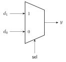
A :1 mux with constants on its data inputs realizes any -input truth table directly, exactly how an FPGA LUT works.
Shannon expansion halves the mux: expand about the select variables and put what remains on the data inputs. Start from the full truth table of 3-input majority:
| 0 | 0 | 0 | 0 |
| 0 | 0 | 1 | 0 |
| 0 | 1 | 0 | 0 |
| 0 | 1 | 1 | 1 |
| 1 | 0 | 0 | 0 |
| 1 | 0 | 1 | 1 |
| 1 | 1 | 0 | 1 |
| 1 | 1 | 1 | 1 |
Fixing collapses each pair of rows into a function of alone (constant , , , constant ), and those residues become the 4:1 mux’s data inputs with on the selects:
| data input | |||
|---|---|---|---|
| 0 | 0 | ||
| 0 | 1 | ||
| 1 | 0 | ||
| 1 | 1 |
A 3-input function on a 4:1 mux plus at most one inverter, one mux size smaller than the direct 8:1 lookup:
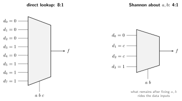
Turns an -bit code into one-hot of outputs. The 2:4 decoder drives the four minterms , , , , gated by an enable.
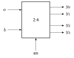
Because the outputs are the minterms, a decoder plus OR
gates implements any set of functions of the same inputs: OR together
the outputs for the rows where each function is
(a ROM is exactly this structure). A demultiplexer is a
decoder with data on the enable: the data value is routed to output
number sel, all other outputs stay
.
The inverse of a decoder: an active input drives its index onto the
output. A priority encoder resolves multiple active inputs by reporting
the highest index, with a valid flag distinguishing “index
0” from “no input”.
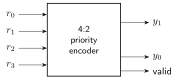
A tristate buffer passes its input when enabled and presents high impedance () when not. Tying several enabled-one-at-a-time tristates to one wire forms a shared bus. At most one driver should be enabled; no driver leaves the bus floating unless a pull resistor or bus keeper defines its level. Conflicting drivers cause contention.
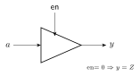
A half adder sums two bits: , .
A full adder adds a carry input, built from two half adders and an OR:
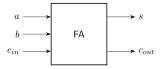
Chaining full adders, each carry feeding the next, gives a ripple-carry adder. It is small but its delay is along the carry path.
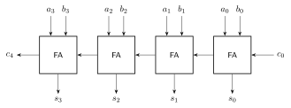
The fix is to compute carries directly instead of waiting for the ripple. Bit generates a carry if both inputs are high and propagates an incoming carry if exactly one is: Unrolling the recurrence expresses every carry in the s, s, and alone, two AND/OR levels if arbitrary fan-in is available, excluding generation: The sum stage reuses the propagate signal: .
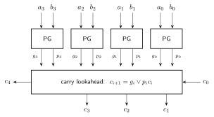
The flat terms grow too wide past a few bits, so wide adders go hierarchical: a 4-bit block exports block generate and propagate, and , and a second-level lookahead computes the block carries. A related speedup, the carry-select adder, computes each upper block twice (for and ) and muxes on the real carry.
Carry lookahead generalizes to a prefix computation. Define a merge operator on (generate, propagate) pairs:
“The combined span generates a carry if the upper part generates one, or propagates one the lower part generates.” The operator is associative, and the prefix gives , so computing all carries is a parallel prefix problem, the same one behind fast scans in parallel programming. Any prefix network is a valid adder, and the network’s shape sets the trade:
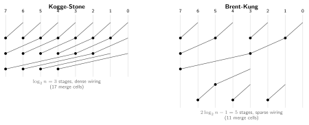
| Network | Stages | Cells | Character |
|---|---|---|---|
| Kogge-Stone | minimal depth, max wires: fast and hungry | ||
| Brent-Kung | fewer cells and wires; greater depth | ||
| Sklansky | minimal depth, but high-fanout nodes need buffering |
Hybrid prefix networks trade wiring, fanout, and depth. The sum remains .
Subtraction reuses an adder: (two’s complement).
XOR each bit of
with sub and use sub as the carry-in:
assign sum = a + (b ^ {W{sub}}) + sub; // sub=0: a+b, sub=1: a-bFor signed operands, overflow is a mismatch between the carries into and out of the sign bit: .
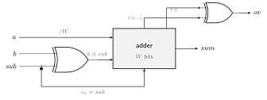
Equality is a bitwise XNOR of the two operands ANDed together: . Magnitude () is a subtractor whose borrow/sign output is examined, or a chain comparing from the most significant bit down. For unsigned operands the borrow alone decides; for signed operands the difference’s sign bit lies exactly when the subtraction overflows, so
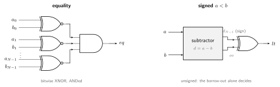
A shifter moves a word by a variable amount. Three flavors:
<<,
>>): vacated bits fill with
.>>>):
sign-fills only when the left operand is signed. It divides by
,
rounding toward negative infinity. Left shifts multiply by
only when the result fits.A barrel shifter handles any shift amount without iteration: stages of 2:1 muxes, stage shifting by when select bit is set. Any shift amount is a sum of powers of two, so the stages compose.
For , three select bits control shifts by 1, 2, and 4, giving a total shift of 0–7 positions.
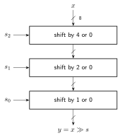
An ALU bundles the arithmetic and logic operations behind a
function-select input, producing a result and status flags:
Z (result zero, the wide NOR of its bits), N
(sign bit), C (carry out), V (signed
overflow). It is the computational core of a datapath.
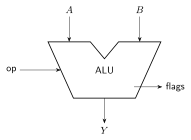
Unsigned multiplication sums shifted partial products; each row is the multiplicand ANDed with one multiplier bit:
An array multiplier lays this out as a grid of AND gates and adders ( area, delay). Faster multipliers use carry-save addition: a full adder compresses three partial-product bits to a sum and a carry with no carry ripple, so a Wallace/Dadda tree reduces all rows to two in levels, and a single fast adder produces the final product.
An -bit by -bit product needs up to bits. Signed multiplication must account for the sign weights; Booth recoding replaces groups of multiplier bits with signed multiples of the multiplicand, reducing partial products. Truncating to bits keeps the low product modulo , losing overflow information.
A small sequential multiplier reuses a shift-and-add datapath over several cycles. A restoring divider repeatedly shifts the partial remainder, subtracts the divisor, and restores it when the subtraction is negative; each step determines a quotient bit. Faster dividers produce more bits per step or use reciprocal approximation. Divide-by-zero, signed overflow, and rounding are part of the arithmetic contract, not consequences to leave to the circuit.
Regular two-level structures implement sum-of-products directly: an AND plane forms product terms from the inputs and their complements, and an OR plane sums chosen products into each output. The families differ only in which plane is configurable:
| Structure | AND plane | OR plane |
|---|---|---|
| ROM (read-only memory) | fixed (full decoder: every minterm) | programmable |
| PLA (programmable logic array) | programmable | programmable |
| PAL (programmable array logic) | programmable | fixed |
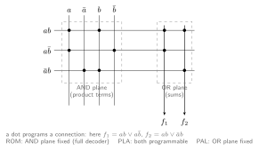
A PAL trades the PLA’s flexibility (each output owns a fixed set of product terms) for speed and simpler programming; PLD is the umbrella term for all such programmable-logic devices, of which the PAL family was the commercial workhorse before FPGAs.
An FPGA generalizes this with lookup tables (LUTs): a -input LUT is a :1 mux fed by a -bit truth-table memory, realizing any -input function.
Propagation delay bounds settling time; contamination delay bounds the earliest output change. Unequal path delays can produce glitches. See Synthesis, Timing and Power for clock constraints.
A hazard is a momentary wrong output (glitch) from unequal path delays, even when the logic is correct. A static-1 hazard is a brief on an output that should stay (static-0 the reverse) when a single input change crosses between two product terms. Take with and falling: the term turns off through one gate while turns on through the inverter plus a gate, so for one inverter delay neither term holds the output up.
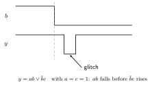
On the K-map the two groups touch but do not overlap; no single group covers both cells the transition moves between:
| 00 | 01 | 11 | 10 | |
|---|---|---|---|---|
| 0 | 0 | 1 | 0 | 0 |
| 1 | 0 | 1 | 1 | 1 |
The fix is the redundant consensus term bridging the adjacent groups: stays through the transition because does not depend on at all. Dynamic hazards (multiple transitions on one change) arise in multi-level logic with reconverging paths. Glitches do not corrupt synchronous capture when setup and hold are met, but still consume power. They matter directly on clocks, asynchronous controls, and latch enables.
Author: Sai Govardhan (saigov14@gmail.com)
Textbooks
License: MIT.